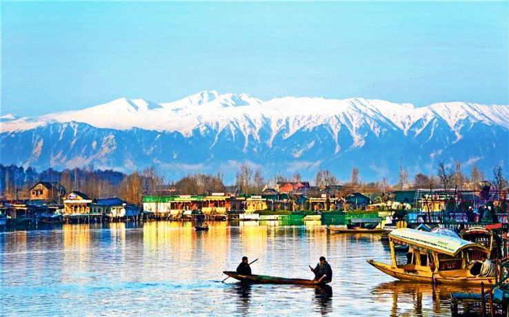
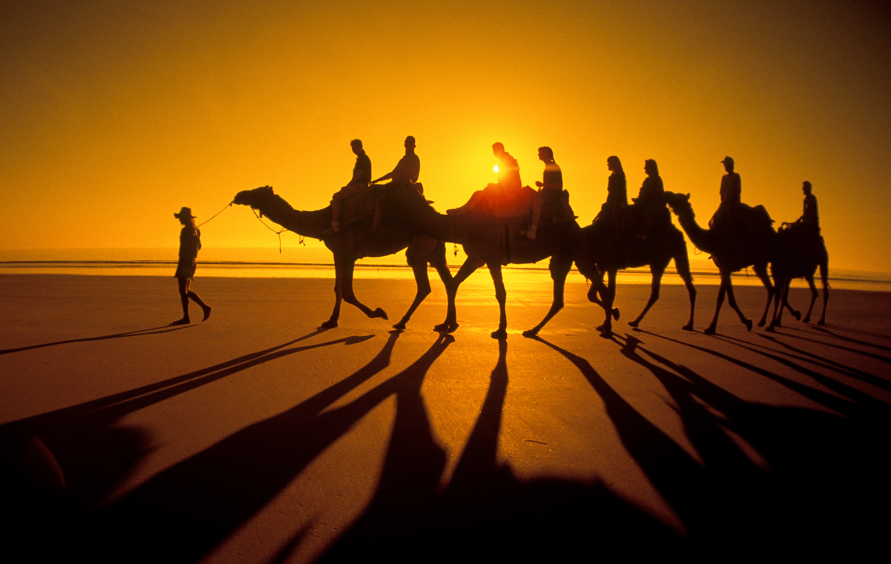
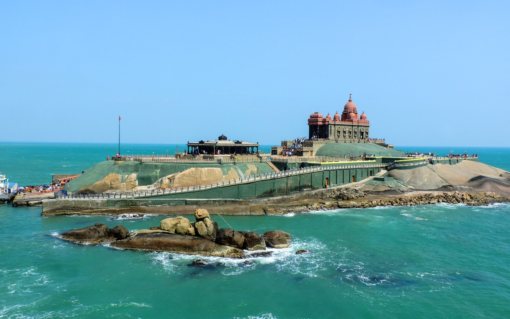

Holiday
Indian railway provide us lots of facility in tourism. Indian railway connects every state
Of our country by railway route . And it is cheaper than flight tickets also ,so that anyone can purchase the Ticket . some of the beautiful place in india where you must visit by train that is..
Jammu & Kashmir

Jammu & Kashmir tourism has been described as a paradise so many times that one feels it is the ultimate homage you could pay to it. There is a timelessness to its beauty, as if nature decided to stretch her imagination to the fullest to create it. In this blog, we bring you the 12 top tourist places that show you the timeless beauty of Jammu & Kashmir.
- List of 10 Best Places to Visit in Jammu & Kashmir
- Yusmarg
- Gulmarg
- Sonmarg
- Pahalgam
- Gurez Valley
- Srinagar
- Vaishno Devi
- Patnitop
- Doda
- Pangong Tso
Meghalaya

Meghalaya, a hilly-state based in North East India, is one of the seven sister states of India. When translated, Meghalaya means the abode of clouds. Staying true to its name, this charming state will leave you spellbound by its lush green valleys, dense forests, high rainfall, and also by its varied bio-diversity. Meghalaya has more than just the thunderclouds and green landscapes. Surrounded by the Khasi, Garo and Jaintia hills, Meghalaya offers you an experience of the unspoilt natural beauty. From majestic hills, cascading waterfalls to beautiful valleys, there is a myriad of places to visit in Meghalaya.
- List of 10 Best Places to Visit in Meghalaya
- Cherrapunji
- Balpakram National Park
- Shillong
- Elephant Falls
- Living Root Bridge
- Mawlynnong Village
- Nohkalikai Falls
- Tura
- Kyllang Rock
- Umiam Lake
Thar

Covering almost 5% of the Indian topography, the Thar desert aka The Great Indian Desert is no less than a geographical wonder situated on India's map. However, not all of it belongs to India, yes, it is important to note that about 15% of this vast ocean of sand lies in the territory of Pakistan and the remaining 85% lies in Rajasthan within the Indian subcontinent.
Thar desert is ranked as the 7th largest desert and 9th largest subtropical desert globally. Speaking of the desert's geography, it majorly comprises the Marusthali (arid) regions in its western parts and semidesert regions in its eastern parts. Due to this, it naturally becomes a conversational topic among global tourists.
Thar desert is ranked as the 7th largest desert and 9th largest subtropical desert globally. Speaking of the desert's geography, it majorly comprises the Marusthali (arid) regions in its western parts and semidesert regions in its eastern parts. Due to this, it naturally becomes a conversational topic among global tourists.
- Top Places to Visit in Thar
- Jaisalmer Fort - It won't be wrong to refer to this fort as a mini-universe in itself
- Desert Safari
- Kuldhara Village
- Gadisar Lake
Kanya Kumari

Kanyakumari is the land of Goddess Parvati and bears witness to the confluence of the Bay of Bengal, Arabian Sea and the Indian Ocean. Also known as Cape Comorin, Kanyakumari is held in high regards by the Hindus owing to its scared temples. One of the main attractions in Kanyakumari is the Kumari Amman Temple.
Kanyakumari is popular because it is the only places on earth, where you can see the Sun Rise and Sun Set from the ocean. It is the only place in India where one can enjoy the unique spectacle of Sunset and Moonrise simultaneously on full moon days.
Kanyakumari is popular because it is the only places on earth, where you can see the Sun Rise and Sun Set from the ocean. It is the only place in India where one can enjoy the unique spectacle of Sunset and Moonrise simultaneously on full moon days.
- Top Places to Visit in Kanya Kumari
- Vivekananda Rock Memorial
- Thiruvalluvar Statue
- Sunset View Point
- Padmanabhapuram Palace
- Kanyakumari Beach